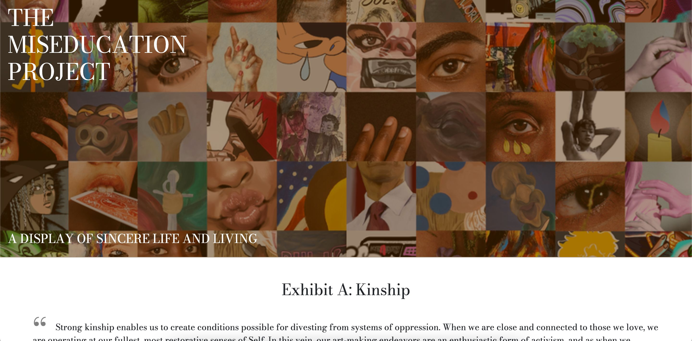
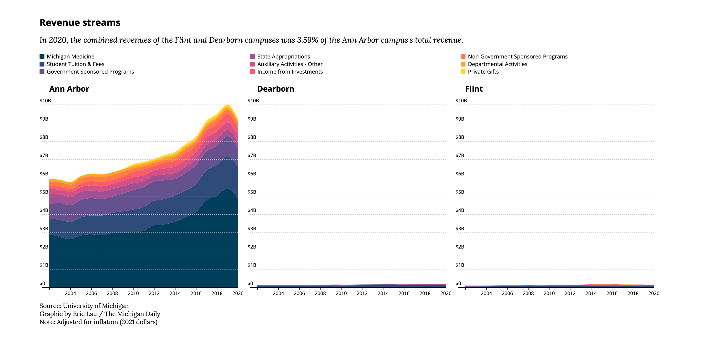
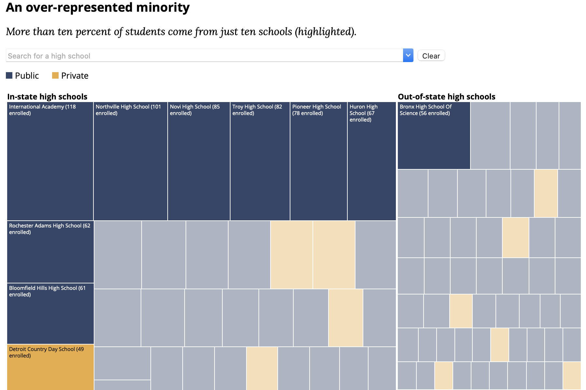

Hello, my name is Eric Lau.
I am currently a data visuals fellow at the Texas Tribune, where I also previously worked as an engineering fellow.
I am a managing online editor at The Michigan Daily where I lead the engineering, data journalism, and product design teams.
I'm also studying computer science, science, technology, and society (STS), and digital studies at the University of Michigan.
twitter, github, linkedin, résumé
ericlau at umich dot edu
Work
My main interests are data visualization and web development. I mostly write in JavaScript and Python, though I'm also comfortable with C/C++. Of the projects featured below, most are from work I've done for The Michigan Daily. You can find more personal and academic work of mine on GitHub.
-
Queer in Color
The Michigan Daily, April 2022
A website to showcase work by queer authors and artists in Michigan in Color. Built using React and ArchieML. -

Love Notes 2022 Edition
The Michigan Daily, February 2022
A website to display love notes that people sent to each other as cassette tapes. Built using Svelte. -

More than 100 Ann Arbor restaurants closed in the past three years. How have these closures affected the community?
The Michigan Daily, December 2021
A map showing the status of Ann Arbor restaurants. Built with QGIS and Adobe Illustrator. -
UMich Class of 2025: By the numbers and their hopes for college
The Michigan Daily, September 2021
Data visuals conveying results from The Michigan Daily Class of 2025 survey. Built with D3 and Scrollama. -
 The Miseducation Project
The Michigan Daily, May 2021
A website to showcase student art and storytelling. Built using React and ArchieML. -
98 Days on the Internet
ENGLISH 124, April 2021
A data-driven article about my browsing history over the 2021 winter semester. Built using D3 and Scrollama. -
 Daily analysis finds historically large salary disparities between three U-M campuses
The Michigan Daily, April 2021
Data visuals and analyses exploring University salary and budget records. Analysis was conducted with Python and graphics were built with D3. -
 We looked at the 301 high schools with the most applicants to U-M. Here's what we found
The Michigan Daily, March 2021
Data visuals and analyses exploring data from a FOIA request on University of Michigan feeder high schools. Analysis was conducted with Python and graphics were built with D3. -
Facebook Messenger Dashboard
Personal, July 2020
A dashboard to visualize various facets of Facebook Messenger conversations. Built using NLTK, Flask, and D3. -
Graphics Engine
Computer Graphics, January 2020 - June 2020
An MDL graphics engine with lighting and coordinate systems capable of rendering animations. Built using C and Python.